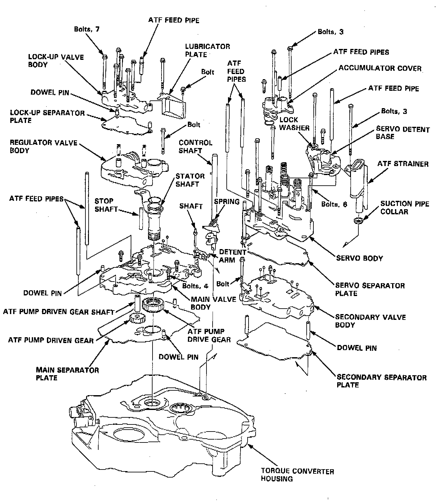
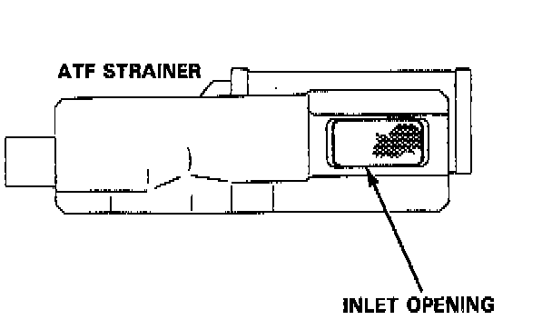

Torque Converter Housing/Valve Body Removal

NOTE:
- Clean ail parts thoroughly in solvent or carburetor cleaner and dry with compressed air.
- Blow out all passages.
- When removing the valve body replace the following:
- O-rings
- Lock washers
1. Remove the ATF feed pipes from the servo body, servo detent base, accumulator cover, lock-up valve body and main valve body.
2. Remove the three bolts securing the ATF strainer and servo detent base, then remove them.
3. Remove the three bolts securing the accumulator cover, then remove the accumulator cover.
4. Remove the six bolts securing the servo body, then remove the servo body and separator plate.
5. Remove the one bolt securing the secondary valve body, then remove the secondary valve body and separator plate.
6. Remove the eight bolts securing the lubricator plate and lock-up valve body, then remove the lubricator plate, lock-up valve body and separator plate.
7. Remove the one bolt securing the regulator valve body, then remove the regulator valve body.
8. Remove the stator shaft and stop shaft.
9. Remove the detent spring from the detent arm, then remove the control shaft from the torque converter housing.
10. Remove the detent arm and detent arm shaft from the main valve body.
11. Remove the four bolts securing the main valve body, then remove the main valve body.
12. Remove the ATF pump driven gear shaft, then remove the ATF pump gears.
13. Remove the main separator plate with two dowel pins.

14. Clean the inlet opening of the ATF strainer thoroughly with compressed air, then check that it is in good condition, and the inlet opening is not clogged.
15. Replace the ATF strainer if it is clogged or damaged.
NOTE: The ATF strainer can be reused if it is not clogged.